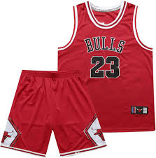

Les équipements
Les chaussures de basket-ball sont probablement l'équipement le plus important pour un joueur. Elles doivent offrir un bon maintien de la cheville, une adhérence élevée pour les changements rapides de direction, et un amorti adapté pour réduire les impacts répétés. On distingue souvent trois types de chaussures en fonction du style de jeu et de la position du joueur : Chaussures montantes : pour un meilleur maintien de la cheville, idéales pour les pivots. Chaussures mi-montantes : un bon compromis entre maintien et légèreté, pour les postes de meneur et ailier. Chaussures basses : privilégiées par les joueurs rapides, comme les meneurs, car elles offrent plus de légèreté et de mobilité.

Le maillot de basket doit être léger et respirant, pour évacuer la transpiration efficacement. La coupe sans manches permet aux joueurs de bouger librement. Quant au short, il est généralement ample pour garantir une grande liberté de mouvement. De nombreux vêtements de basket utilisent aujourd'hui des matériaux techniques, comme le polyester ou des tissus anti-humidité, pour améliorer le confort.
La balle de basket est évidemment indispensable. Les ballons sont généralement fabriqués en cuir, en composite ou en caoutchouc, chacun ayant des propriétés différentes adaptées aux terrains intérieurs ou extérieurs. Les ballons de cuir sont plus chers mais sont idéaux pour les surfaces intérieures, tandis que ceux en caoutchouc sont plus résistants aux terrains extérieurs.